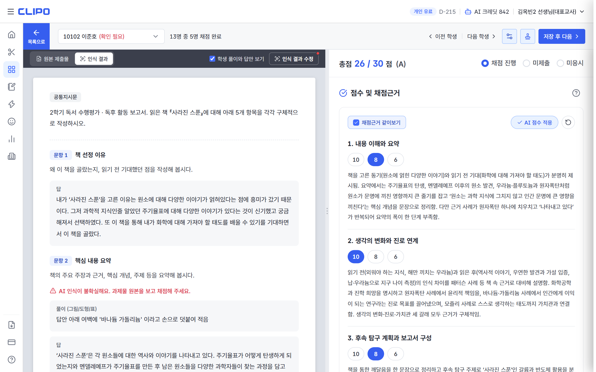
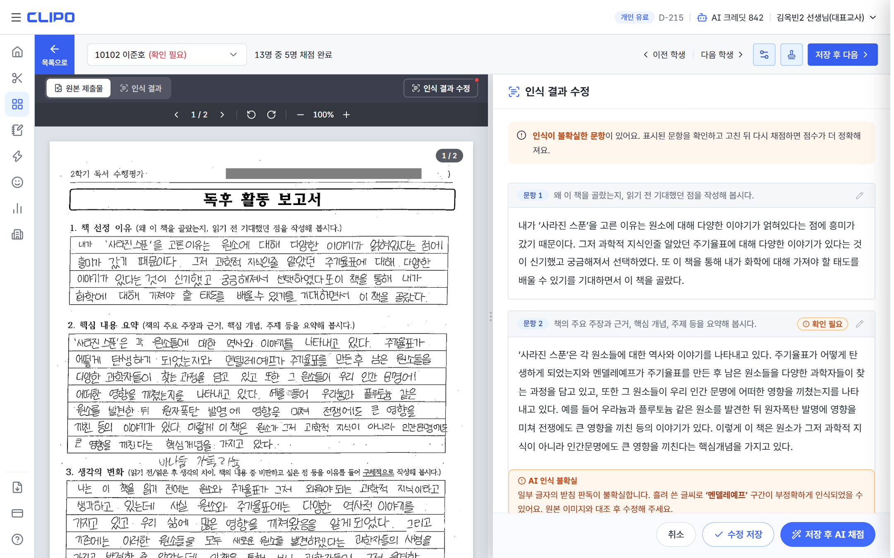

AI 채점 결과가 기대와 다를 때
점수가 이상할 때 확인하는 순서. 대부분 두 번째 단계에서 원인이 보여요.
순서대로 확인해요
-
채점 근거를 읽어요
요소별로 답안의 어느 부분을 보고 판단했는지 적혀 있어요.
학생 채점 상세 · 점수 아래
-
AI가 읽은 내용을 원본과 비교해요
인식 결과 수정버튼에 빨간 점이 있으면 확인해 볼 문항이 있다는 뜻이에요.학생 채점 상세 · 좌측
인식 결과탭 -
잘못 읽힌 문항만 고치고
저장 후 AI 채점고친 내용으로 다시 채점돼요. 과제물 파일을 바꿨을 때도 다시 채점해 주세요.
인식 결과 수정드로워 -
전체적으로 후하거나 짜면
채점 수준을 조정해 다시 채점해요관대하게·엄격하게 방향만 고르면 돼요.
다시 채점 창
-
그래도 다르면 점수를 직접 골라 저장해요
저장한 점수가 최종이에요.
학생 채점 상세 · 점수
화면에서는 이렇게 보여요

인식 결과 탭에 AI가 읽은 답안이, 오른쪽에 요소별 점수와 근거가 보여요. 인식 결과 수정 버튼의 빨간 점은 확인해 볼 문항이 있다는 표시예요.
인식 결과 수정을 열면 왼쪽이 원본으로 바뀌어 나란히 비교할 수 있어요. 확인이 필요한 문항에 표시가 붙어요. 고친 뒤 저장 후 AI 채점을 누르면 돼요.알아 두면 좋은 것
- 다시 채점할 때마다 크레딧 1개가 들어요. 채점이 실패하면 그 실행에 쓴 크레딧은 돌려받아요.
- 다시 채점하면 AI 피드백은 새 결과로 바뀌고, 선생님이 저장한 점수는 유지돼요.
- 점수가 매번 조금씩 다를 수 있어요. 고정된 공식이 아니라 답안을 종합해 읽는 방식이라 그래요. 큰 차이가 반복되면 2장의 채점기준을 먼저 살펴봐 주세요.
🌱
초등 선생님께. 초등에서는 선생님이 AI보다 후하게 주시는 경우가 많았어요. AI 점수가 전반적으로 낮게 느껴지면 채점 수준을 관대하게로 두고 채점해 보세요.